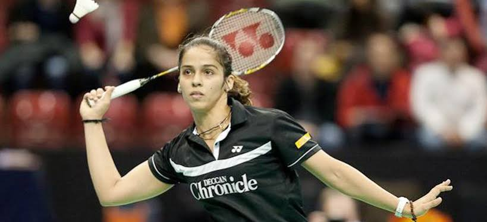

sports_tennis Saina Nehwal sports_tennis

sania's image
"You can't let the highs make you feel overconfident nor can
you let the lows be a reason to dampen your spirit"
-Saina Nehwal
Saina Nehwal is the first-ever badminton player from India to clinch an Olympic medal. The Indian shuttler created history when she won the bronze medal at the London 2012 Games.
The Haryana shuttler started turning heads very early on in her career when she won the BWF World Junior Championships in 2008.
The same year she made her first Olympics appearance in Beijing, but it was only at London 2012 that she gained worldwide fame. Born on the 17th March 1990, Saina Nehwal started playing badminton at the age of eight after her family moved from Haryana to Hyderabad.
Her initiation into the game was primarily because she didn’t know the local language well and she wanted to further the dream of her mother, who was a state-level badminton player herself. The Indian shuttler successfully did that by representing India at the highest level in 2008 at the Beijing Olympics. En route to becoming the first Indian woman to reach the last eight of Olympic quarter-finals, a young Saina Nehwal defeated the then world number five Wang Chen of Hong Kong before losing to Indonesia's Maria Kristin Yulianti in the quarter-finals of Beijing 2008.
The same year she made her first Olympics appearance in Beijing, but it was only at London 2012 that she gained worldwide fame. Born on the 17th March 1990, Saina Nehwal started playing badminton at the age of eight after her family moved from Haryana to Hyderabad.
Her initiation into the game was primarily because she didn’t know the local language well and she wanted to further the dream of her mother, who was a state-level badminton player herself. The Indian shuttler successfully did that by representing India at the highest level in 2008 at the Beijing Olympics. En route to becoming the first Indian woman to reach the last eight of Olympic quarter-finals, a young Saina Nehwal defeated the then world number five Wang Chen of Hong Kong before losing to Indonesia's Maria Kristin Yulianti in the quarter-finals of Beijing 2008.
Awards
Saina Nehwal has received 4 awards from the Government of India. She won the Arjuna Award for Badminton in 2009. A year later in 2010, she won the Padma Shri and Rajiv Gandhi Khel Ratna, which is the highest sports honour in India. She was also awarded the Padma Bhushan in 2016 for her outstanding performance in the sport.